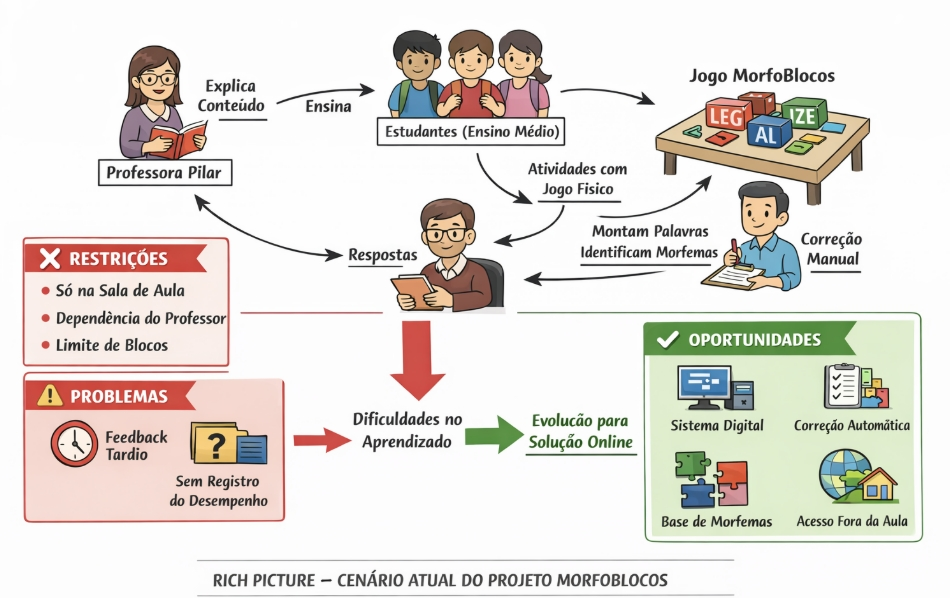
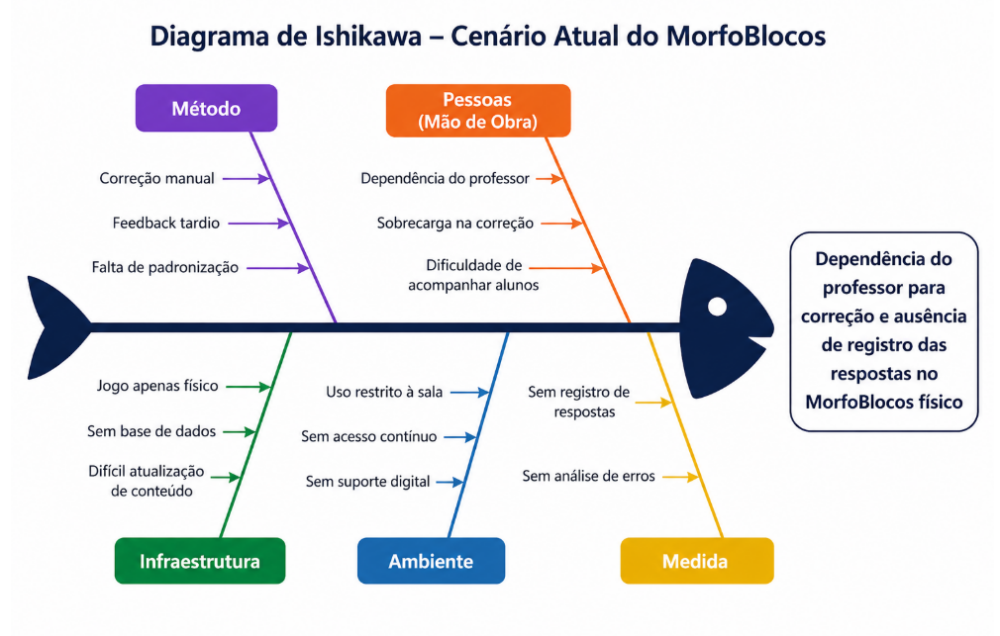
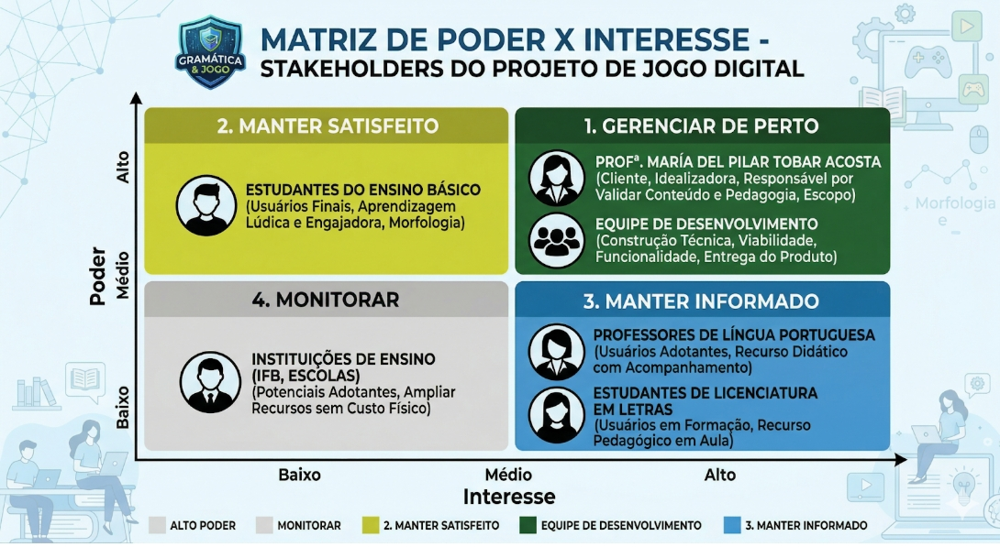

Visao do produto
1. Cenário Atual do Cliente e do Negócio
1.1 Identificação do Cliente/Parceiro
Nome: Profª. María del Pilar Tobar Acosta.
Tipo: Cliente individual — professora de Língua Portuguesa do Instituto Federal de Brasília (IFB), pesquisadora na área de ensino de morfologia e idealizadora do jogo didático Morfologia em Blocos (MorfoBlocos).
Representante: a própria professora María del Pilar Tobar Acosta, autora do jogo físico e principal parte interessada no desenvolvimento da versão digital.
Forma de contato: reuniões presenciais e por videoconferência, e-mail e canal de mensagens instantâneas para alinhamentos rápidos.
Vínculo com o projeto: cliente real e Product Owner (PO). Será responsável por fornecer o conteúdo didático (morfemas, categorias e processos de formação de palavras), validar as decisões de design e conteúdo e avaliar as entregas realizadas ao longo do desenvolvimento.
1.2 Introdução ao Negócio e Contexto
O MorfoBlocos é uma ferramenta didática para o ensino de morfologia. Atualmente, a operação é analógica, baseada em blocos físicos. O propósito aqui é a entrega de feedback pedagógico sobre a estrutura das palavras. O gargalo atual reside na baixa escalabilidade do modelo físico e na latência do feedback, já que a validação depende 100% da disponibilidade síncrona do professor.
O jogo é composto por peças coloridas que representam morfemas — raízes (ou radicais), prefixos, sufixos e desinências — que podem ser combinadas pelos estudantes para formar diferentes vocábulos. Cada peça traz, de um lado, o morfema em si e, do outro, a classificação do elemento e o processo de formação envolvido (flexão, derivação, derivação parassintética, composição, derivação regressiva e reduplicação). Dessa forma, ao montar palavras, o estudante visualiza não apenas o resultado, mas o processo morfológico que o gerou.
O jogo já foi aplicado em turmas do ensino médio integrado, licenciatura e tecnólogo do IFB Campus São Sebastião, com resultados positivos relatados pela equipe e pelos estudantes participantes. No relatório final do projeto original, a própria idealizadora manifestou a intenção de desenvolver uma versão digital do jogo como forma de ampliar seu alcance e viabilizar seu uso em um número significativo de escolas.
Apesar de seu valor pedagógico, o uso do jogo apresenta limitações operacionais e financeiras. Sua aplicação depende da presença do professor para orientação e validação manual das respostas, o que reduz a autonomia dos estudantes. Além disso, o custo do jogo físico pode dificultar sua ampla adoção por estudantes e instituições de ensino. Nesse contexto, a solução digital proposta não substitui o recurso físico, mas atua como um complemento, ampliando seu alcance e possibilidades de uso.
O público-alvo principal são estudantes do ensino fundamental II e do ensino médio, mas o material também vem sendo utilizado com estudantes de licenciatura em Letras e Pedagogia, como recurso para formação de professores de língua materna.
1.3 Rich Picture

Imagem 1 - Fonte: Autoria Própria via IA
O diagrama representa o funcionamento atual do projeto MorfoBlocos, no qual professores de Língua Portuguesa como a professora Pilar, apresentam o conteúdo de morfologia e os estudantes do ensino médio utilizam o jogo físico para manipular blocos com morfemas, formando palavras e analisando sua estrutura. As atividades são corrigidas manualmente pelo professor, sem registro ou acompanhamento do desempenho. Esse modelo apresenta limitações como a ausência de feedback imediato, a dependência do professor e a restrição do uso ao ambiente de sala de aula, o que dificulta a prática contínua dos alunos. Como proposta de melhoria, o diagrama indica a transição para uma solução digital baseada em uma base estruturada de morfemas, permitindo a realização de exercícios variados, correção automática, acesso fora da sala de aula e acompanhamento do desempenho dos estudantes.
1.4 Identificação da Oportunidade ou Problema
O projeto surge da necessidade de superar o gargalo operacional no ensino de morfologia causado pelo uso exclusivo do jogo físico MorfoBlocos. No cenário atual, a dinâmica pedagógica apresenta uma dependência crítica da mediação do professor, responsável pela orientação e correção manual das atividades, o que impede o acompanhamento individualizado e limita a escalabilidade das práticas em sala de aula.
O fluxo de informação atual é marcado pelo feedback tardio, uma vez que o estudante não recebe validação imediata sobre a classificação de morfemas ou os processos de formação de palavras, como derivação e flexão. Além disso, a ausência de registro sistemático das respostas gera falta de rastreabilidade do aprendizado, impossibilitando que o professor identifique padrões de erro em conceitos como alomorfia e derivação parassintética ao longo do tempo.
A infraestrutura baseada no jogo físico impõe restrições de uso, limitando a prática ao ambiente escolar e à disponibilidade de blocos. Soma-se a isso o custo do material, que dificulta sua aquisição e reduz o acesso por parte dos estudantes. Como consequência, há prejuízo na continuidade do aprendizado e na consolidação dos conceitos morfológicos.

Imagem 2
1.5 Desafios do Projeto
O principal desafio do projeto está na transição de um modelo de ensino baseado na manipulação de blocos físicos e na correção manual para uma solução digital estruturada e integrada. Atualmente, esse processo limita a rastreabilidade das respostas e dificulta o acompanhamento do desempenho dos alunos, devido à ausência de registro sistematizado e à centralização da validação no professor. Outro ponto a ser observado está na estruturação dos dados linguísticos. O sistema deve organizar morfemas, suas variações e relações, incluindo casos como alomorfes e processos de derivação, permitindo a validação automática das respostas de forma consistente.
Além disso, há o desafio relacionado à coleta e análise de dados educacionais. A solução deve registrar as respostas dos alunos, possibilitando a identificação de padrões de erro e o acompanhamento da evolução individual. A usabilidade também é um fator crítico, exigindo uma interface intuitiva e de fácil utilização, sem necessidade de treinamento. Por fim, o sistema deve garantir confiabilidade, permitindo o uso em diferentes contextos e assegurando o armazenamento correto dos dados mesmo com o aumento do volume de informações.
1.6 Mapa de Stakeholders
Os principais stakeholders do projeto são: a professora María del Pilar Tobar Acosta, como cliente, idealizadora do jogo físico e responsável por validar as decisões de conteúdo e pedagógicas; os estudantes do ensino básico e superior, como usuários finais do jogo digital; os professores de Língua Portuguesa que poderão adotar a solução em suas aulas; as instituições de ensino (IFB, escolas públicas e privadas) como potenciais adotantes da solução; e a equipe de desenvolvimento, responsável por construir tecnicamente a solução no contexto da disciplina.
A seguir, é apresentado o quadro-resumo dos stakeholders.
| Stakeholder | Relação com a solução | Interesse Principal | Influência |
|---|---|---|---|
| Profª. María del Pilar Tobar Acosta | Cliente e idealizadora do jogo físico | Validar conteúdo, proposta pedagógica, escopo e entregas | Alta |
| Estudantes do ensino básico | Usuários finais do jogo digital | Aprender morfologia de forma lúdica, visual e engajadora | Alta |
| Professores de Língua Portuguesa | Usuários que aplicam o jogo em sala | Dispor de recurso didático de fácil acesso e com acompanhamento do aluno | Média |
| Estudantes de Licenciatura em Letras | Usuários em contexto de formação de professores | Utilizar o jogo como recurso pedagógico em sua formação | Média |
| Instituições de ensino (IFB e escolas) | Potenciais adotantes da solução | Ampliar recursos didáticos disponíveis sem custo adicional de material físico | Baixa |
| Equipe de desenvolvimento | Responsável pela construção do produto | Entregar uma solução viável, funcional e alinhada aos objetivos da disciplina | Alta |
Além do quadro-resumo, será elaborada uma matriz Poder × Interesse para classificar os stakeholders nas categorias Gerenciar de Perto, Manter Satisfeito, Manter Informado e Monitorar, orientando a estratégia de comunicação e engajamento da equipe ao longo do projeto.

1.7 Segmentação de Clientes
Embora o projeto tenha um cliente único e real (a professora María del Pilar), a solução atenderá a diferentes perfis de usuários finais, que podem ser segmentados da seguinte forma:
-
Estudantes do Ensino Fundamental II (11 a 14 anos): têm seu primeiro contato mais formal com conteúdos de morfologia. Precisam de uma experiência altamente visual, lúdica e guiada, com linguagem simples e feedback imediato;
-
Estudantes do Ensino Médio (15 a 18 anos): já possuem alguma familiaridade com os conceitos morfológicos e podem ser desafiados com atividades mais complexas, envolvendo diferentes processos de formação de palavras e análise de vocábulos mais sofisticados;
-
Estudantes de Licenciatura em Letras e Pedagogia: utilizam o jogo tanto como recurso de estudo quanto como referência para sua futura prática docente, demandando explicações teóricas mais aprofundadas e exemplos relacionados ao ensino;
-
Professores de Língua Portuguesa: atuam como mediadores do uso do jogo em sala de aula, necessitando de recursos para aplicar o material, propor atividades e, futuramente, acompanhar o desempenho dos estudantes.
2. Solução Proposta
2.1 Objetivo Geral do Produto
Desenvolver uma plataforma web interativa (MorfoBlocos Digital) que viabilize a construção autônoma de palavras a partir de morfemas, fornecendo feedback pedagógico automatizado para os estudantes e garantindo o registro e a rastreabilidade do aprendizado para auxiliar o acompanhamento pelos professores.
2.2 Objetivos Específicos (OEs) do Produto
-
(OE1) Proporcionar um ambiente digital interativo que permita aos estudantes a manipulação autônoma e a combinação livre de blocos de morfemas.
-
(OE2) Estruturar e disponibilizar um catálogo digital gerenciável de morfemas, palavras válidas e atividades pedagógicas.
-
(OE3) Fornecer feedback pedagógico imediato e automatizado sobre a validade morfológica e os processos de formação das combinações realizadas pelo estudante.
-
(OE4) Viabilizar o acompanhamento contínuo do aprendizado por meio do registro, consolidação e rastreabilidade do desempenho individual e coletivo dos estudantes.
2.3 Características de Produto (Mapeadas com os Objetivos Específicos)
A solução proposta para o MorfoBlocos Digital deverá contemplar, de forma preliminar, as seguintes características de produto (CP), mapeadas aos objetivos específicos (OE) da seção 2.2 e aos valores de negócio (VN) identificados:
| ID | Característica de Produto (CP) | Descrição resumida | Contribuição Principal |
|---|---|---|---|
| CP1 | Controle de Acesso e Perfis de Usuário | Mecanismo que garante que professores e estudantes acessem ambientes, ferramentas e dados adequados aos seus respectivos papéis no processo de aprendizagem. | OE4 |
| CP2 | Administração de Conteúdo Pedagógico | Ambiente administrativo para que a professora possa gerenciar o catálogo de morfemas de forma autônoma, além de cadastrar e estruturar as atividades. | OE2 |
| CP3 | Espaço de Construção Morfológica | O "tabuleiro" digital: área visual e intuitiva onde o estudante seleciona, arrasta e combina os blocos para explorar e formar palavras livremente. | OE1 |
| CP4 | Validador de Estruturas e Feedback em Tempo Real | Sistema que avalia instantaneamente a combinação formada, informando ao estudante se a palavra é válida e qual processo morfológico foi utilizado. | OE3 |
| CP5 | Portfólio de Progresso do Estudante | Painel individualizado para que o aluno consulte suas próprias conquistas, histórico de tentativas e palavras já descobertas. | OE4 |
| CP6 | Painel de Monitoramento de Turmas (Dashboard) | Área exclusiva da docência para visualização de relatórios consolidados, permitindo a identificação ágil de dificuldades recorrentes e padrões de erro das turmas. | OE4 |
2.4 Tecnologias a Serem Utilizadas
A solução será desenvolvida com base em uma arquitetura cliente-servidor, garantindo organização e separação das responsabilidades do sistema.
Serão utilizadas as tecnologias React, TypeScript e Tailwind CSS no frontend, permitindo a construção de uma interface interativa, especialmente para a funcionalidade de arrastar blocos.
No backend, será utilizado Python com o framework Django, responsável pela lógica do sistema e validação das palavras. Para o armazenamento de dados, será utilizado o PostgreSQL, para garantir estrutura e confiabilidade.
As tecnologias foram escolhidas por serem simples de utilizar, bem documentadas e adequadas ao tempo da disciplina, permitindo o desenvolvimento de um MVP funcional de forma organizada.
| Camada | Tecnologias |
|---|---|
| Frontend | React + TypeScript + Tailwind CSS |
| Backend | Django (Python) |
| Banco de Dados | PostgreSQL |
2.5 Pesquisa de Mercado e Análise Competitiva
Existem hoje algumas soluções digitais voltadas ao ensino de língua portuguesa, principalmente baseadas em exercícios e jogos educativos. Um exemplo é o Gramatikê, desenvolvido pela Universidade de Brasília, que funciona offline e propõe o ensino de gramática por meio de atividades interativas e jogos, com conteúdos adaptados a diferentes níveis de aprendizagem.
De modo geral, essas soluções seguem uma lógica baseada em exercícios estruturados, como responder perguntas, completar frases ou escolher alternativas. Esse modelo contribui para a prática e fixação do conteúdo, mas tende a focar mais no reconhecimento de respostas corretas, com menor ênfase na exploração ativa da formação das palavras. Outras plataformas educacionais seguem um padrão semelhante, com forte uso de repetição e memorização, especialmente no ensino de vocabulário e regras gramaticais.
Nesse cenário, ferramentas como o Gramatikê e outros aplicativos educacionais oferecem boa base para a prática, mas exploram de forma mais limitada a construção das palavras a partir de seus elementos.
O MorfoBlocos Digital se diferencia justamente nesse ponto. Enquanto essas soluções se concentram na resolução de exercícios, a proposta do sistema é permitir que o aluno monte palavras utilizando blocos que representam morfemas. Dessa forma, o aluno pode testar combinações, observar resultados e compreender melhor os processos de formação das palavras. Além disso, o sistema oferece correção automática e feedback imediato, tornando o aprendizado mais dinâmico.
Assim, o principal diferencial da solução está na mudança de abordagem: sair de um modelo centrado em respostas para um modelo que incentiva a construção ativa, com foco específico em morfologia.
2.6 Viabilidade da Proposta
A proposta é viável no contexto da disciplina, considerando o acesso direto à cliente, o escopo definido e a possibilidade de entrega incremental de um MVP funcional ao final do semestre. Embora a equipe seja reduzida e ainda esteja em processo de consolidação do domínio sobre algumas tecnologias adotadas, o projeto foi estruturado de forma compatível com essa realidade, com entregas incrementais, priorização das funcionalidades essenciais e validações frequentes com a cliente.
O principal risco técnico está na estruturação da base de morfemas e na implementação do mecanismo de feedback automático, que exige modelagem cuidadosa das relações entre morfemas, alomorfes e processos de formação de palavras. Esse risco é mitigado pela divisão incremental das entregas, pelo uso de tecnologias amplamente documentadas como Django e PostgreSQL, e pelo acesso contínuo à cliente para validação do conteúdo linguístico.
Assim, a proposta é considerada viável, desde que:
- O escopo do MVP permaneça controlado;
- As prioridades sejam mantidas ao longo das entregas; e
- A equipe preserve a estratégia de aprendizado contínuo e validação com a cliente ao longo do desenvolvimento.
2.6.1 Estimativas de custos
| Categoria | Item | Descrição | Custo Estimado (Comercial) | Custo Efetivo (Projeto Acadêmico) |
|---|---|---|---|---|
| Infraestrutura | Hospedagem Frontend (Vercel / Netlify) | Servidor em nuvem para hospedar a interface em React/TypeScript. | R$ 110,00 ($20 USD) | R$ 0,00 (Hobby Tier) |
| Infraestrutura | Hospedagem Backend (Render / DigitalOcean) | Servidor em nuvem (VM) para rodar a API em Django (Python). | R$ 40,00 ($7 USD) | R$ 0,00 (Free Tier) |
| Infraestrutura | Banco de Dados (Supabase / Render) | Instância gerenciada do PostgreSQL para salvar catálogo e histórico. | R$ 80,00 ($15 USD) | R$ 0,00 (Free Tier) |
| Infraestrutura | Registro de Domínio | Endereço web oficial (ex: morfoblocos.com.br). | R$ 3,33 (R$ 40/ano) | R$ 3,33 (R$ 40/ano) |
| Ferramentas | Controle de Versão e CI/CD (GitHub) | Repositório de código e automação de deploys. | R$ 110,00 ($20 USD) | R$ 0,00 (Free/Student) |
| Ferramentas | Design e Prototipação (Figma) | Criação de telas e validação visual com a cliente. | R$ 80,00 ($15 USD) | R$ 0,00 (Education) |
| Ferramentas | Gestão Ágil (Notion / Trello) | Controle do Backlog, Sprints e documentação. | R$ 55,00 ($10 USD) | R$ 0,00 (Free Tier) |
2.7 Benefícios Esperados
-
Para a cliente: ampliar o alcance pedagógico do MorfoBlocos, superando as limitações do jogo físico e viabilizando seu uso em um número significativo de escolas sem custo adicional de material. A solução permitirá ainda que a professora gerencie o conteúdo de morfemas e exercícios de forma autônoma e acompanhe a evolução do aprendizado dos estudantes ao longo do tempo.
-
Para os estudantes: uma experiência de aprendizado de morfologia mais autônoma, interativa e acessível, com feedback imediato sobre as palavras formadas, progressão de dificuldade clara e acesso ao conteúdo a qualquer momento e lugar, sem depender do jogo físico ou da presença do professor.
-
Para os professores de Língua Portuguesa: um recurso didático digital pronto para uso em sala de aula ou como atividade complementar, reduzindo o tempo dedicado à correção manual e oferecendo dados sobre o desempenho dos estudantes para orientar intervenções pedagógicas mais precisas.
-
Para a equipe de desenvolvimento: a oportunidade de aplicar na prática os conceitos da disciplina de Requisitos de Software, desenvolvendo uma solução real com cliente real, utilizando tecnologias amplamente adotadas no mercado e consolidando competências em desenvolvimento web, modelagem de dados e engenharia de requisitos.
3. Intervenção Social
A solução proposta pelo MorfoBlocos Digital tende a produzir uma intervenção social voltada à ampliação do acesso ao ensino de morfologia, à transformação das práticas de correção, acompanhamento e realização de atividades morfológicas, e à redução da dependência da correção manual realizada pelo professor durante as atividades de aprendizagem.
Entre os principais impactos esperados da solução, destacam-se:
- Ampliar o acesso ao conteúdo de morfologia fora do ambiente físico da sala de aula;
- Permitir maior autonomia dos estudantes na realização das atividades;
- Oferecer feedback automático sobre as palavras formadas;
- Permitir acompanhamento básico do desempenho dos estudantes pelos professores;
- Reduzir limitações operacionais associadas ao uso exclusivo do jogo físico;
- Incentivar o uso de recursos digitais no apoio ao ensino de Língua Portuguesa.
A utilização da plataforma também pode gerar impactos não previstos inicialmente, que precisam ser considerados durante o desenvolvimento e uso do sistema, tais como:
- Dependência maior do acesso à internet e a dispositivos digitais;
- Dificuldade de utilização por usuários com menor familiaridade tecnológica;
- Risco de redução da interação presencial entre professor e estudante durante as atividades;
- Possibilidade de interpretação excessivamente automatizada de conteúdos que dependem de mediação pedagógica;
- Necessidade de cuidados com armazenamento e rastreabilidade dos dados de desempenho e histórico das atividades dos estudantes.
Por fim, a intervenção social do MorfoBlocos Digital não está apenas na digitalização do jogo físico, mas também na mudança da forma como as atividades podem ser realizadas, acompanhadas e utilizadas em diferentes contextos educacionais. Dessa forma, os requisitos do sistema devem considerar não apenas os benefícios esperados, mas também os possíveis efeitos decorrentes do uso contínuo da plataforma.
4. Estratégias de Engenharia de Software
Para o desenvolvimento do MorfoBlocos Digital, foram definidas estratégias de engenharia de software que permitam organizar o trabalho da equipe, acompanhar a evolução do sistema e garantir entregas ao longo do semestre, considerando as limitações de tempo e o contexto acadêmico do projeto.
4.1 Estratégia Priorizada
O projeto adota uma abordagem ágil, com ciclo de vida iterativo e incremental, permitindo a evolução contínua dos requisitos a partir do feedback da cliente ao longo das entregas.
Para a gestão do desenvolvimento, é utilizado o Scrum, responsável pela organização do trabalho em sprints, priorização do backlog e realização de reuniões de planejamento, revisão e retrospectiva.
Complementarmente, são aplicadas práticas do XP (eXtreme Programming), como TDD, refatoração e integração contínua, especialmente devido à necessidade de garantir a corretude da lógica de validação das combinações de morfemas.
Dessa forma, Scrum e XP são utilizados de maneira complementar: o Scrum organiza o processo e a interação com a cliente, enquanto o XP orienta a implementação técnica.
4.2 Quadro Comparativo
A seguir, apresenta-se uma comparação entre processos que poderiam ser utilizados no projeto.
| Critério | ScrumXP | OpenUP (Open Unified Process) |
|---|---|---|
| Abordagem Geral | Abordagem ágil que combina Scrum para gestão (sprints, backlog e eventos) com práticas técnicas do XP (TDD, refatoração e integração contínua). | Processo iterativo e incremental baseado no RUP, com maior estruturação e formalização das atividades. |
| Organização do Trabalho | Trabalho organizado em sprints (1–2 semanas), com planejamento, revisão e retrospectiva. Desenvolvimento orientado por backlog priorizado e histórias de usuário. | Quatro fases sequenciais (Concepção, Elaboração, Construção e Transição), cada uma contendo iterações com entregáveis definidos. |
| Tratamento dos Requisitos | Requisitos expressos como histórias de usuário, refinados continuamente com a cliente. Alta adaptação a mudanças ao longo do desenvolvimento. | Requisitos organizados em casos de uso, com maior formalização e controle de mudanças ao longo das iterações. |
| Qualidade Técnica | Forte ênfase em práticas do XP, como TDD, refatoração, integração contínua e design simples, promovendo validação contínua do código. | Qualidade assegurada por validações incrementais e definição arquitetural nas fases iniciais, com menor ênfase em práticas técnicas automatizadas. |
| Participação do Cliente | Alta participação: cliente envolvido continuamente nas sprints, validando incrementos e fornecendo feedback frequente. | Participação mais estruturada, concentrada nas fases e nas revisões de iteração. |
| Flexibilidade de Requisitos | Alta flexibilidade, com adaptação contínua baseada no feedback da cliente. | Flexibilidade moderada, podendo ser limitada por decisões arquiteturais definidas nas fases iniciais. |
| Documentação | Documentação leve, focada no essencial, com maior ênfase na comunicação contínua e nos testes como forma de validação. | Documentação estruturada, com artefatos como visão, casos de uso e planos de iteração. |
| Adequação ao Projeto MorfoBlocos | Alta. Adequada à equipe reduzida, à disponibilidade da cliente e à necessidade de evolução contínua e validação da lógica morfológica. | Média. Pode contribuir para organização, mas tende a ser mais rígido e demandar maior esforço documental para o contexto da disciplina. |
3.3 Justificativa
Com base nas características do projeto MorfoBlocos Digital e no quadro comparativo apresentado, foi adotada uma abordagem ágil, utilizando o Scrum como framework de gestão do desenvolvimento e práticas do XP (eXtreme Programming) no desenvolvimento, por ser a alternativa mais adequada ao contexto da equipe, do cliente e do produto.
O principal fator que justifica essa escolha é a natureza evolutiva dos requisitos do projeto. O jogo digital envolve regras morfológicas complexas, validadas continuamente pela cliente, e funcionalidades interativas cujo comportamento esperado só se torna claro ao longo do desenvolvimento. O Scrum, ao organizar o trabalho em ciclos curtos (sprints) e promover feedback contínuo da cliente e validação frequente das funcionalidades desenvolvidas, responde diretamente a esse cenário. Além disso, a cliente (Profª. Pilar) possui disponibilidade para interações frequentes, o que favorece a dinâmica iterativa proposta pela abordagem ágil.
As práticas do XP também se mostram adequadas às necessidades do produto. A lógica de validação automática das combinações de morfemas, que é o núcleo do MorfoBlocos Digital, exige alta confiabilidade no código. O TDD (Test-Driven Development), a refatoração contínua e a integração contínua garantem que essa lógica seja desenvolvida com qualidade e testada de forma sistemática desde o início, reduzindo o risco de defeitos no mecanismo central do jogo.
Em comparação, o OpenUP apresenta uma estrutura de fases mais rígida e maior ênfase na documentação de artefatos formais, como casos de uso e planos de iteração. Embora adequado para projetos que necessitam de maior previsibilidade arquitetural desde o início, o OpenUP pode ser excessivo para o escopo e o prazo da disciplina, além de demandar maior esforço de documentação em um contexto onde a comunicação direta com a cliente é viável e preferível.
Dessa forma, o Scrum, em conjunto com práticas do XP, se mostra a alternativa mais adequada ao projeto, pois permite alinhar a organização do processo com a qualidade técnica do desenvolvimento, lidar com requisitos evolutivos e viabilizar entregas incrementais com validação contínua.
5. Engenharia de Requisitos
5.1 Atividades e Técnicas de ER
Elicitação e descoberta
-
Entrevistas semiestruturadas: encontros periódicos com a cliente para compreender o jogo físico, seus princípios pedagógicos, o corpus de morfemas e as expectativas em relação à versão digital, identificando tanto requisitos declarados quanto requisitos latentes.
-
Análise documental: estudo do relatório final do projeto original, do material didático e das peças físicas do jogo, para reconstruir o vocabulário pedagógico e a identidade visual do MorfoBlocos.
-
Observação do contexto real de uso: acompanhamento da aplicação do jogo físico em sala de aula, quando possível, para capturar requisitos latentes que emergem do uso real e dificilmente apareceriam em entrevistas.
-
Triangulação de fontes de informação: cruzamento sistemático entre entrevistas, análise documental e observação, de modo a confrontar percepções e consolidar um entendimento compartilhado sobre o problema e suas causas.
Análise e Consenso
-
Workshops de Requisitos: encontros colaborativos com a cliente para discutir escopo, resolver divergências de interpretação e construir entendimento compartilhado sobre aspectos pedagógicos e de conteúdo.
-
Priorização MoSCoW: classificação das funcionalidades em Must have, Should have, Could have e Won't have for now, junto à cliente, para definir o escopo do MVP e registrar desejáveis para evolução futura.
-
Matriz Avaliação Técnica × Valor de Negócio: posicionamento das características de produto em uma matriz que cruza valor percebido pela cliente com esforço técnico estimado, orientando a sequência de entregas.
-
Negociação e resolução de conflitos: mediação estruturada de divergências entre requisitos — por exemplo, entre fidelidade ao jogo físico e viabilidade no prazo do semestre — com registro das decisões e suas justificativas. Declaração de Requisitos
Declaração de Requisitos
-
Narrativas descritivas: usadas para declarar requisitos de negócio em linguagem natural, articulando o problema identificado na seção 1.4, o valor esperado para a cliente e as restrições do contexto do projeto.
-
Histórias de usuário: declaração dos requisitos de usuário no formato "Como
, quero , para ", organizadas em backlog de produto e utilizadas no planejamento das sprints. -
Critérios de aceitação Given/When/Then: cada história de usuário será acompanhada por critérios de aceitação em formato estruturado, explicitando condição inicial, ação e resultado esperado de forma verificável.
-
Catálogos de RFs e RNFs: os requisitos funcionais serão declarados no padrão "verbo no infinitivo + objeto" (por exemplo, "Combinar morfemas para formar palavras"); os requisitos não funcionais serão organizados segundo o modelo URPS+, conforme orientação do template da disciplina.
-
Catálogo de regras de negócio: as regras morfológicas do português — quais combinações de morfemas são válidas e a qual processo de formação cada resultado corresponde — serão declaradas em catálogo próprio, distinto dos requisitos funcionais, conforme a definição de regra de negócio adotada pelo livro-texto.
Representação de Requisitos
-
Rich Picture no formato AS-IS / TO-BE: representação sistêmica (contextual) utilizada na seção 1.3 para contrastar o cenário atual do jogo físico com o cenário proposto para a solução digital, capturando atores, fluxos e limitações do contexto.
-
Diagrama de Ishikawa (6M's): utilizado na seção 1.4 para organizar a análise das causas do problema identificado, distribuindo os fatores contribuintes pelos eixos Método, Máquina, Mão de Obra, Material, Medida e Meio Ambiente.
-
Mapa de Stakeholders e Matriz Poder × Interesse: representações sistêmicas (contextuais) utilizadas na seção 1.6 para classificar os stakeholders conforme sua influência e interesse, orientando a estratégia de comunicação da equipe ao longo do projeto.
-
Protótipos de baixa fidelidade e storyboards: produzidos durante as sprints para apoiar a validação de fluxos de uso com a cliente antes da implementação, mantendo-se no escopo da ER conforme a delimitação do SWEBOK v4.0.
-
Fluxos de navegação e de estados conceituais: usados em nível conceitual para representar caminhos de uso do estudante (por exemplo, da seleção de morfemas ao recebimento de feedback), sem detalhar elementos de interface ou lógica interna.
Verificação e Validação de Requisitos
-
Revisão interna pela equipe: antes de cada sprint, os requisitos refinados serão revisados pelos membros da equipe para verificar clareza, consistência, completude e testabilidade.
-
Validação com a cliente ao final de cada sprint: nas reuniões de revisão de sprint, a cliente avaliará o incremento entregue, confirmando que os requisitos implementados atendem a suas expectativas pedagógicas e ao problema declarado na seção 1.4.
-
Definition of Ready (DoR) e Definition of Done (DoD): o DoR define as condições mínimas para um item entrar em sprint; o DoD define as condições para considerá-lo concluído. Atuam como filtros de qualidade antes e depois do desenvolvimento.
-
Testes de aceitação baseados em critérios declarados: cada história de usuário será testada contra seus critérios de aceitação no formato Given/When/Then, tornando a validação objetiva e rastreável.
Organização e Atualização de Requisitos
-
Product Backlog único: histórias de usuário, RFs, RNFs e regras de negócio serão mantidos em um backlog único, priorizado pela Product Owner (a cliente) e continuamente refinado.
-
Refinamento contínuo do backlog: ao longo de cada sprint, equipe e cliente revisarão o backlog, atualizando prioridades, detalhando itens para as próximas sprints e ajustando o escopo conforme o aprendizado adquirido.
-
Aplicação do princípio DEEP: o backlog será mantido Detalhado adequadamente, Estimado, Emergente e Priorizado, conforme prática consolidada no desenvolvimento ágil.
-
Controle de versões dos artefatos de requisitos: a visão do produto, o backlog e os demais artefatos serão mantidos em repositório versionado, preservando histórico de decisões e rastreabilidade de mudanças.
-
Matriz de rastreabilidade: matriz que conecta objetivos específicos, características de produto, requisitos funcionais e não funcionais, regras de negócio e critérios de aceitação, assegurando que cada decisão técnica permaneça ligada ao problema declarado na seção 1.4.
5.2 Engenharia de Requisitos e o XP
As atividades da Engenharia de Requisitos, suas práticas e técnicas são mapeadas, a seguir, às cerimônias do Scrum adotadas pela equipe para a condução do projeto MorfoBlocos Digital. Embora o processo escolhido seja o ScrumXP — combinando o framework Scrum para gerenciamento com as práticas técnicas do XP para engenharia —, optou-se por organizar a tabela em torno das cerimônias do Scrum por serem os momentos formais de tomada de decisão e validação no ciclo iterativo, conforme descrito na seção 4.10 do livro-texto.
Importante: as atividades da ER não ocorrem de forma estritamente sequencial dentro de cada cerimônia. Conforme apresentado no capítulo 5 do livro-texto, elas são entrelaçadas e se retroalimentam ao longo do projeto, de modo que a ordem das linhas da tabela é apenas de apresentação — não de execução obrigatória.
| Cerimônia do Scrum | Atividade ER | Prática | Técnica | Resultado esperado |
|---|---|---|---|---|
| Refinamento do Product Backlog | Elicitação e Descoberta | Levantamento contínuo de requisitos e compreensão do domínio. | Entrevistas semiestruturadas com a cliente, análise documental do jogo físico, triangulação de fontes. | Itens do backlog detalhados e compreensão compartilhada do problema com a cliente. |
| Análise e Consenso | Priorização contínua e definição de escopo dos próximos itens. | Priorização MoSCoW, Matriz Avaliação Técnica x Valor de Negócio, workshops com a cliente. | Backlog priorizado, com trade-offs explicitados e funcionalidades críticas no topo. | |
| Declaração | Detalhamento dos itens do backlog em diferentes níveis de abstração. | Histórias de usuário, critérios de aceitação Given/When/Then, catálogos de RFs, RNFs e regras de negócio. | Itens do backlog declarados em linguagem compreensível, rastreáveis ao problema da seção 1.4. | |
| Representação | Representação sistêmica do contexto e do problema. | Rich Picture AS-IS/TO-BE, Mapa de Stakeholders, Matriz Poder x Interesse, Diagrama de Ishikawa. | Entendimento compartilhado sobre o contexto, os atores e o escopo do sistema. | |
| Planejamento da Sprint | Análise e Consenso | Análise de viabilidade e seleção dos itens da sprint. | Discussão em equipe, análise de dependências, programação em pares (XP). | Consenso sobre a meta da sprint e os itens selecionados para o Sprint Backlog. |
| Declaração | Refinamento final dos critérios de aceitação dos itens selecionados. | Definition of Ready (DoR), critérios Given/When/Then. | Histórias de usuário com critérios verificáveis e prontas para desenvolvimento (Ready). | |
| Representação | Evolução de protótipos para apoiar a implementação. | Protótipos de baixa e média fidelidade, fluxos de navegação conceituais. | Representações que orientam a implementação e antecipam validações com a cliente. | |
| Daily Scrum | Elicitação e Descoberta | Esclarecimento pontual de dúvidas sobre requisitos em desenvolvimento. | Conversas curtas com a cliente quando necessário, registro de impedimentos relacionados a requisitos. | Impedimentos de ER identificados e tratados com agilidade durante a sprint. |
| Organização e Atualização | Atualização incremental do estado dos itens em desenvolvimento. | Sincronização sobre progresso, registro de descobertas que impactam o backlog. | Visibilidade contínua do estado dos itens da sprint frente aos requisitos declarados. | |
| Revisão da Sprint | Verificação e Validação | Validação do incremento entregue com a cliente. | Demonstração do incremento funcional, revisão contra critérios de aceitação, Definition of Done (DoD). | Incremento validado pela cliente, com feedback registrado para ajuste de itens futuros. |
| Organização e Atualização | Repriorização do backlog com base no aprendizado da sprint. | Refinamento do backlog, negociação colaborativa, princípio DEEP. | Product Backlog repriorizado e atualizado com itens de maior valor para a próxima sprint. | |
| Retrospectiva da Sprint | Organização e Atualização | Reflexão sobre o processo de ER e ajuste de práticas. | Discussão estruturada da equipe sobre como os requisitos foram tratados, identificação de melhorias. | Ajustes nas práticas e técnicas de ER para a próxima sprint, artefatos consistentes e rastreáveis. |
| Verificação e Validação | Verificação da qualidade dos artefatos de requisitos produzidos. | Revisão interna pela equipe dos artefatos da sprint, controle de versões. | Artefatos de requisitos verificados e versionados ao final de cada sprint. |
O mapeamento apresentado evidencia onde cada atividade da ER tem maior ênfase em cada cerimônia do Scrum, sem sugerir uma ordem rígida de execução. As práticas técnicas do XP — como programação em pares, TDD, integração contínua e refatoração — permeiam a execução da sprint e dão suporte à qualidade dos requisitos implementados, em coerência com os valores de comunicação, feedback, simplicidade e confiança que sustentam a prática da Engenharia de Requisitos descrita no capítulo 5 do livro-texto.
6. Cronograma e Entregas
Processo: ScrumXP | Sprints de 2 semanas | PO: Profª. María del Pilar Tobar Acosta
| Sprint | Início | Fim | Objetivo Principal | Entregas Esperadas | Validação do Cliente |
|---|---|---|---|---|---|
| Sprint 1 | 14/04/2026 | 28/04/2026 | Planejamento da Release e Elicitação Inicial. | - Backlog inicial definido com a PO. - Mapeamento preliminar de morfemas com a Profª. Pilar. - Ajuste do Rich Picture. |
Reunião com a Profª. Pilar para validar o backlog inicial e confirmar prioridades. |
| Sprint 2 | 29/04/2026 | 12/05/2026 | Elicitação, Prototipagem e Definição de Requisitos. | - Entrega Unidade 2 (até 18/05). - Requisitos de Software (RF e RNF com URPS+). - DoR e DoD definidos. - Backlog priorizado e MVP definido. - Intervenção Social documentada. |
Reunião com a Profª. Pilar para validar protótipos e requisitos levantados. |
| Sprint 3 | 13/05/2026 | 26/05/2026 | Análise, Consenso e Início do PBB. | - Protótipos de baixa fidelidade das telas principais. - PBB iniciado. - User Stories com critérios de aceitação (DoR verificado). - Refinamento do backlog com a PO. |
Reunião com a Profª. Pilar para validar User Stories e critérios de aceitação. |
| Sprint 4 | 27/05/2026 | 09/06/2026 | Verificação, Validação e BDD. | - Cenários BDD escritos (Dado/Quando/Então). - Entrega Unidade 3 (até 15/06). - Verificação e Validação de Requisitos. - Organização e Atualização de Requisitos. - PBB e BDD documentados. |
Reunião com a Profª. Pilar para validar cenários BDD com a lógica pedagógica do jogo. |
| Sprint 5 | 10/06/2026 | 23/06/2026 | User Story Mapping e Casos de Uso. | - User Story Mapping elaborado. - Modelos e Especificação de Casos de Uso iniciados. |
Reunião com a Profª. Pilar para validar o mapeamento da jornada do estudante. |
| Sprint 6 | 24/06/2026 | 07/07/2026 | Refinamento Final e Entrega. | - Ajustes finais nos artefatos de requisitos. - Entrega Unidade 4 (até 06/07). - User Story Mapping finalizado. - Modelos e Especificação de Casos de Uso. - Documento completo e vídeo final entregues. - DoD aplicado a todas as entregas. |
Homologação final com a Profª. Pilar. DoD aplicado a todas as entregas. |
7. Interação entre Equipe e Cliente
7.1 Composição da Equipe
- Ana Beatriz Souza Araújo: Engenharia de Requisitos, Desenvolvedor backend
- Artur Fernandes: Engenharia de Requisitos, Desenvolvedor backend
- Bruno Souza: Engenharia de Requisitos, Desenvolvedor backend
- Carlos Eduardo: Engenharia de Requisitos, Desenvolvedor frontend.
- Luiz Henrique: Engenharia de Requisitos, Desenvolvedor frontend do projeto auxílio na parte de Scrum
7.2 Comunicação
Ferramentas de comunicação:
-
WhatsApp: Canal oficial para a troca de mensagens rápidas e comunicação do dia a dia da equipe. Será utilizado para avisos urgentes, envio de links úteis e resolução de dúvidas pontuais que não exigem debates complexos.
-
Google Meet: Plataforma padrão para todas as chamadas de áudio e vídeo. Diretriz obrigatória: Absolutamente todas as reuniões realizadas no Meet devem ser gravadas. Isso garante a preservação do histórico de decisões e facilita o repasse de informações para membros que porventura não possam participar ao vivo.
Rituais e Rotinas de Alinhamento:
-
Dailies: Reuniões rápidas de alinhamento para que a equipe compartilhe o que foi feito, o que será desenvolvido no dia e levante possíveis bloqueios ou impedimentos técnicos. Sincronização Acadêmica: Ocorrerão momentos dedicados à comunicação durante o período das aulas e imediatamente após o encerramento das mesmas. Este tempo será aproveitado para consolidar o trabalho, integrar as tarefas dos desenvolvedores e planejar as próximas etapas com toda a equipe reunida.
-
Interações com a Cliente: A comunicação direta com a cliente seguirá um protocolo rigoroso de rastreabilidade. Todo o contato oficial será feito de forma 100% remota via reuniões online no Google Meet, que serão integralmente gravadas. Essa prática resguarda o projeto, assegurando que todos os requisitos, feedbacks, aprovação e mudanças de escopo solicitadas pela cliente estejam registrados em vídeo e áudio para consulta futura.
7.3 Processo de Validação
Para garantir que o MorfoBlocos Digital construa o produto correto e solucione o problema central de baixa eficiência e falta de rastreabilidade no ensino de morfologia, a equipe de desenvolvimento adotará uma estratégia de validação contínua. Os processos de validação foram estruturados em quatro frentes principais, mapeadas para as características do produto e perfis de stakeholders:
1. Validação de Requisitos e Alinhamento de Negócio
-
Objetivo: Assegurar que a transição do meio físico para o digital preserve a identidade visual e os princípios pedagógicos do jogo original.
-
Stakeholders envolvidos: Prof.ª María del Pilar Tobar Acosta (Cliente/PO).
-
Método: Revisões conjuntas da documentação de requisitos, diagramas e, principalmente, validação de protótipos de interface (baixa e alta fidelidade) para garantir a continuidade da proposta idealizada pela autora.
2. Validação Pedagógica e de Regras de Domínio
-
Objetivo: Atestar a precisão técnica e acadêmica do "motor" de correção do jogo, garantindo que o sistema classifique corretamente as construções morfológicas.
-
Stakeholders envolvidos: Cliente/PO e estudantes de Licenciatura em Letras.
-
Método: Baterias de testes focadas nas regras de negócio da aplicação. Será validada a exatidão do catálogo digital de morfemas e a precisão do feedback automático diante de casos reais de formação de palavras, incluindo tratamento de exceções morfológicas, ocorrências de alomorfia e derivações parassintéticas.
3. Validação de Usabilidade e Experiência do Usuário (UX)
-
Objetivo: Certificar que a interface gráfica atende aos requisitos de acessibilidade e que a curva de aprendizado é adequada ao público do ensino básico.
-
Stakeholders envolvidos: Estudantes do Ensino Fundamental II e do Ensino Médio
-
Método: Realização de testes de usabilidade com os usuários finais utilizando protótipos navegáveis ou versões preliminares (releases). A equipe avaliará, por meio de observação sistemática, a capacidade do estudante de formar palavras de maneira autônoma (seleção e combinação de morfemas) sem a necessidade de mediação externa, mitigando o risco de rejeição tecnológica.
4. Validação Técnica do Valor de Negócio (Rastreabilidade)
-
Objetivo: Confirmar que a solução supera efetivamente a limitação de acompanhamento do modelo físico, gerando dados úteis para intervenções pedagógicas.
-
Stakeholders envolvidos: Professores de Língua Portuguesa e equipe de desenvolvimento.
-
Método: Simulação de uso em massa e testes de integração com o banco de dados. O processo validará se as interações, acertos e padrões de erro dos estudantes estão sendo armazenados de forma persistente e se as informações geradas no painel de rastreabilidade são claras e acionáveis para o professor.
7.4 Registro de Reuniões
Para garantir a rastreabilidade e o alinhamento com as expectativas da cliente, todas as interações estratégicas são registradas. As mesmas estarão disponibilizadas na aba Registro de Reuniões.
8. Requisitos de Software
Esta seção detalha as especificações fundamentais para a concepção e o desenvolvimento do software. O conteúdo está organizado entre requisitos funcionais, que definem as ações e comportamentos que o sistema deve executar, e requisitos não funcionais, que estabelecem os critérios de qualidade, desempenho e restrições técnicas necessários para garantir uma experiência de uso eficiente e segura.
8.1 Lista de Requisitos Funcionais
| ID | Requisito Funcional (Verbo + Objeto) | Rastreabilidade (CP) | Prioridade (MoSCoW) | Justificativa MoSCoW |
|---|---|---|---|---|
| RF01 | Solicitar credenciais de acesso ao sistema. | CP1 - Controle de Acesso | Must Have | Sem autenticação nenhum usuário consegue acessar o sistema. |
| RF02 | Autenticar acesso ao sistema utilizando credenciais. | CP1 - Controle de Acesso | Must Have | É o mecanismo central de entrada no sistema para todos os perfis. |
| RF03 | Permitir a recuperação de acesso mediante envio de nova senha. | CP1 - Controle de Acesso | Should Have | Agrega usabilidade mas o MVP funciona sem recuperação de senha. |
| RF04a | Cadastrar morfemas no catálogo do sistema. | CP2 - Admin de Conteúdo | Must Have | Sem morfemas cadastrados o jogo não tem conteúdo para funcionar. |
| RF04b | Editar morfemas existentes no catálogo do sistema. | CP2 - Admin de Conteúdo | Must Have | Necessário para correção e atualização de conteúdo cadastrado. |
| RF04c | Remover morfemas do catálogo do sistema. | CP2 - Admin de Conteúdo | Must Have | Necessário para exclusão de conteúdo incorreto ou obsoleto. |
| RF04d | Listar morfemas cadastrados no catálogo do sistema. | CP2 - Admin de Conteúdo | Must Have | Necessário para que o administrador gerencie o catálogo existente. |
| RF05a | Cadastrar palavras válidas no catálogo do sistema. | CP2 - Admin de Conteúdo | Must Have | Sem palavras válidas o validador não tem base para funcionar. |
| RF05b | Editar palavras válidas existentes no catálogo do sistema. | CP2 - Admin de Conteúdo | Must Have | Necessário para correção de palavras cadastradas incorretamente. |
| RF05c | Remover palavras válidas do catálogo do sistema. | CP2 - Admin de Conteúdo | Must Have | Necessário para exclusão de palavras inválidas ou duplicadas. |
| RF05d | Listar palavras válidas cadastradas no catálogo do sistema. | CP2 - Admin de Conteúdo | Must Have | Necessário para que o administrador gerencie o catálogo existente. |
| RF06a | Cadastrar atividades pedagógicas no sistema. | CP2 - Admin de Conteúdo | Must Have | Sem atividades cadastradas o estudante não tem o que realizar. |
| RF06b | Editar atividades pedagógicas existentes no sistema. | CP2 - Admin de Conteúdo | Must Have | Necessário para atualização e correção de atividades já criadas. |
| RF06c | Remover atividades pedagógicas do sistema. | CP2 - Admin de Conteúdo | Must Have | Necessário para exclusão de atividades obsoletas ou incorretas. |
| RF06d | Listar atividades pedagógicas cadastradas no sistema. | CP2 - Admin de Conteúdo | Must Have | Necessário para que o administrador gerencie as atividades disponíveis. |
| RF07 | Realizar atividades pedagógicas disponíveis no sistema. | CP3 - Espaço de Construção | Must Have | É a funcionalidade central do produto — sem ela o sistema não tem propósito. |
| RF08 | Movimentar blocos de morfemas na área de montagem. | CP3 - Espaço de Construção | Must Have | É a mecânica principal para a montagem/processo de formação das palavras. |
| RF09 | Submeter a combinação de blocos para validação. | CP3 - Espaço de Construção | Must Have | Mecânica importante, sem a submissão não há validação, logo o aluno não recebe feedback para evolução nas atividades. |
| RF10 | Consultar explicações sobre conteúdos morfológicos relacionados às atividades. | CP3 - Espaço de Construção | Could Have | Desejável pedagogicamente mas o MVP funciona sem material de apoio. |
| RF11 | Consultar o resultado da validação da combinação de blocos submetida. | CP4 - Validador de Estruturas | Must Have | Permite ao estudante acompanhar sua própria evolução ao longo do tempo. |
| RF12 | Consultar o processo de formação morfológica da palavra validada. | CP4 - Validação de Estruturas | Must Have | Garante o objetivo didático do sistema, permitindo que o estudante compreenda a estrutura e a regra por trás da palavra que acabou de validar. |
| RF13 | Consultar o histórico de pontuações individuais. | CP5 - Portfólio de Progresso | Must Have | Fundamental para a gamificação e engajamento, permitindo que o estudante acompanhe seu próprio progresso ao longo do tempo. |
| RF14 | Consultar os detalhes de uma atividade realizada. | CP5 - Portfólio de Progresso | Should Have | Importante para que o estudante revise seus erros e acertos passados, mas o MVP funciona apenas com a exibição do histórico de notas/pontos. |
| RF15 | Acessar relatório de desempenho consolidado da turma. | CP6 - Painel de Monitoramento | Must Have | Permite ao professor identificar dificuldades e orientar intervenções pedagógicas. |
| RF16 | Consultar os erros morfológicos mais frequentes dos estudantes. | CP6 - Painel de Monitoramento | Should Have | Agrega valor ao monitoramento, mas o painel funciona sem esse detalhamento. |
8.2 Lista de Requisitos Não Funcionais
| ID | Categoria (URPS+) | Descrição Mensurável para Teste | Método de Validação / Teste |
|---|---|---|---|
| RNF01 | Usabilidade | O estudante deve conseguir arrastar, encaixar os blocos e formar sua primeira palavra em menos de 1 minuto em seu primeiro uso, sem auxílio de tutoriais. | Teste de Usabilidade cronometrado com novos usuários. |
| RNF02 | Usabilidade | A interface deve permitir selecionar, mover e soltar blocos utilizando eventos nativos de mouse (desktop) e touch (mobile) sem falhas de renderização. | Teste de Interface Automático (E2E) e Teste Manual (Touch/Mouse). |
| RNF03 | Performance | O sistema deve processar a combinação de blocos e exibir o feedback visual na tela em um tempo máximo de 2 segundos. | Monitoramento de Tempo de Resposta (Network Tab / Testes de Performance). |
| RNF04 | Confiabilidade | O sistema deve preservar a integridade dos dados durante acessos simultâneos. | Teste de Carga e Concorrência no Banco de Dados (verificação ACID). |
| RNF05 | Suportabilidade | A interface cliente deve comunicar-se com a lógica de negócio exclusivamente por meio de APIs. | Inspeção de Arquitetura e Code Review. |
| RNF06 | Suportabilidade | O sistema deve permitir a manutenção do catálogo de morfemas via Django Admin, sem telas de cadastro no frontend React. | Teste de Inserção via Django Admin. |
| RNF07 | Restrições | O frontend deve ser desenvolvido obrigatoriamente utilizando React com TypeScript. | Inspeção de Código / Configuração do Repositório. |
| RNF08 | Restrições | O backend deve ser desenvolvido obrigatoriamente em Python utilizando o framework Django. | Inspeção de Código / Configuração do Repositório. |
| RNF09 | Restrições | O banco de dados deve ser implementado utilizando o SGBD PostgreSQL. | Validação da Infraestrutura / Configuração de Banco. |
| RNF10 | Suportabilidade | O sistema deve operar sem falhas críticas nas duas últimas versões estáveis dos navegadores Chrome, Firefox, Edge e Safari. | Teste de Compatibilidade Cross-browser. |
| RNF11 | Usabilidade | A interface deve readequar seus elementos sem sobreposição ou scroll horizontal em telas a partir de 360px de largura. | Teste Cross-device (Emuladores mobile / DevTools). |
| RNF12 | Restrições | O sistema deve ser acessível via HTTP/HTTPS a partir de um navegador web, sem exigir instalação local. | Teste de Implantação e Acesso URL. |
9. Definition of Ready (DoR) e Definition of Done (DoD)
Esta seção apresenta os critérios de Definition of Ready (DoR) e Definition of Done (DoD) adotados pela equipe para o desenvolvimento do MorfoBlocos Digital. Alinhados à abordagem ScrumXP e à organização do backlog via User Story Mapping (USM), esses critérios funcionam como "contratos de qualidade". O DoR garante que o trabalho esteja maduro e rastreável antes de entrar na Sprint, enquanto o DoD atesta que o incremento atende aos rigorosos padrões técnicos e de negócio antes da entrega.
9.1 Definition of Ready (DoR) - Definição de Preparado
Um item do Story Map (Épico ou User Story) só será selecionado para o Sprint Backlog e puxado para desenvolvimento se cumprir todos os seguintes critérios:
-
Formato e Clareza: A funcionalidade está descrita no formato de User Story ("Como [ator], quero [objetivo], para [benefício]") e associada a uma Característica de Produto (CP) específica.
-
Critérios de Aceitação: A User Story possui critérios de aceitação explícitos e testáveis (ex: formato Given/When/Then), cobrindo os fluxos principais e alternativos (especialmente crucial para RFs atomizados de operações CRUD).
-
Rastreabilidade de Restrições: Todos os Requisitos Não Funcionais (RNFs) e Regras de Negócio (RN01 a RN08) aplicáveis à história estão mapeados e compreendidos pela equipe.
-
Priorização Consolidada: O item possui justificativa objetiva de Valor de Negócio (VB) e Complexidade Técnica (CT), está classificado na matriz de priorização e alinhado com o escopo do MVP.
-
Estimativa Conjunta: O esforço técnico foi discutido e estimado coletivamente pelos desenvolvedores (Ana Beatriz, Artur, Bruno, Carlos e Luiz Henrique).
-
Resolução de Dependências: Não há bloqueios externos pendentes. Se a história exige validação pedagógica prévia (ex: uma regra morfológica específica) ou ativos visuais, estes já foram fornecidos ou validados pela cliente (Profª. Pilar).
9.2 Definition of Done (DoD) - Definição de Pronto
Uma User Story em desenvolvimento só avança para o status "Concluído" (Done) e compõe o incremento do produto se cumprir absolutamente todos os critérios abaixo:
-
Implementação Arquitetural: O código foi finalizado respeitando rigorosamente os RNFs de restrição transversal do projeto (Frontend em React/TypeScript, Backend em Django/Python e persistência no PostgreSQL).
-
Garantia das Regras de Negócio: O comportamento do sistema atende às políticas invariantes declaradas (ex: salvamento automático de pontuação - RN06; restrição de relatórios apenas para professores - RN02).
-
Testes e Qualidade (Práticas XP): A lógica implementada passou pelos testes automatizados e/ou testes unitários definidos na etapa de concepção (TDD).
-
Validação de RNFs: Os requisitos não funcionais mapeados para a história foram validados (ex: tempo de resposta inferior a 2 segundos - RNF03; interface não sobreposta em resoluções a partir de 360px - RNF11).
-
Revisão de Código (Code Review): O código fonte passou por inspeção técnica e foi aprovado por pelo menos um membro da equipe diferente do autor original (Pull Request aprovado).
-
Integração Contínua: O código foi integrado à branch principal sem gerar regressões, falhas de compilação ou quebras nos fluxos já existentes.
-
Homologação: A funcionalidade está operando perfeitamente em ambiente de homologação, pronta para ser demonstrada e validada pela cliente (Profª Pilar) na cerimônia de Sprint Review.
10. Backlog
A presente seção apresenta o backlog do produto MorfoBlocos Digital, organizado a partir dos requisitos funcionais (RFs), requisitos não funcionais (RNFs) e regras de negócio (RN) elicitados e consolidados ao longo das atividades de Engenharia de Requisitos. Todas as histórias de usuário aqui declaradas derivam diretamente da lista de RFs apresentada anteriormente neste documento. Trata-se de uma lista preliminar, sujeita a refinamentos durante o desenvolvimento, conforme o produto evolui e novos aprendizados emergem das interações com a cliente.
Esta versão da seção incorpora as correções acordadas com o professor e revisadas pelo monitor durante a apresentação da Unidade, incluindo:
-
O desmembramento dos requisitos de manutenção de catálogo em operações CRUD distintas;
-
A reclassificação de determinados itens — antes tratados como requisitos funcionais — como regras de negócio;
-
A adoção de critérios objetivos para a classificação MoSCoW e para a Matriz de Valor de Negócio × Complexidade Técnica;
-
A atomização dos requisitos funcionais de modo a garantir que cada Característica de Produto seja sustentada por mais de um RF, preservando a coerência arquitetural do produto.
10.1 Backlog Geral
10.1.1 Nota Metodológica
O modelo tradicional de Product Backlog em formato de lista priorizada (Épicos → Histórias de Usuário → Tarefas), conforme descrito por Schwaber e Sutherland (2020) e adotado por padrão em frameworks ágeis como Scrum e XP, foi substituído pela técnica de User Story Mapping (USM) no escopo deste projeto.
A decisão pela substituição se justifica por três motivos principais:
-
Visão de fluxo de uso, não apenas de funcionalidades: o USM, conforme proposto por Patton (2014) e descrito no livro-texto da disciplina (cap. 9), organiza as histórias de usuário em torno das atividades do usuário, preservando a narrativa de uso do produto. Em um produto educacional como o MorfoBlocos Digital — em que a sequência pedagógica (acessar atividade → manipular blocos → submeter → receber feedback → progredir) é parte do valor entregue —, essa narrativa é mais informativa do que uma lista hierárquica isolada de funcionalidades.
-
Alinhamento com a abordagem Lean Inception adotada pela equipe: ao longo do projeto, a equipe adotou práticas inspiradas em Lean Inception (Caroli, 2018), que utiliza o Story Map como artefato natural de organização do MVP e de releases incrementais.
-
Compatibilidade com o processo XP escolhido: o XP não prescreve um formato rígido de backlog. O Story Map atende plenamente à necessidade de organização, priorização visual e planejamento de releases declarada na seção 3 deste documento.
Esta seção 10.1 mantém, portanto, os catálogos consolidados de RFs, RNFs e Regras de Negócio, a tabela de User Stories com rastreabilidade para RNFs e a Matriz de Rastreabilidade — artefatos que apoiam o Story Map e que persistem mesmo com a substituição do Product Backlog em formato tradicional.
O Story Map propriamente dito está disponível em artefato externo, acessível através do link abaixo:
10.1.2 Catálogo Consolidado de Requisitos Funcionais
O catálogo a seguir consolida os 24 requisitos funcionais (RFs) elicitados para o MorfoBlocos Digital, organizados por Característica de Produto (CP) e com a respectiva classificação MoSCoW.
As operações de manutenção do catálogo de conteúdo (morfemas, palavras válidas e atividades pedagógicas) foram desmembradas em operações CRUD individuais — Cadastrar, Editar, Remover e Listar — conforme recomendação do professor, de modo a tornar cada RF atômico, testável e independentemente rastreável.
Adicionalmente, em resposta à observação do professor de que CPs com apenas um RF apresentam baixa coesão arquitetural, foram introduzidos novos RFs em CP3, CP4 e CP5: o RF09 (Submeter combinação) separa o ato da submissão da movimentação livre dos blocos (RF08); o RF10 anterior (que acumulava as responsabilidades de validar e exibir o processo de formação morfológica) foi desmembrado em RF11 e RF12, garantindo que cada operação seja independentemente rastreável e testável; e o RF14 (Consultar detalhes de uma atividade) amplifica o valor pedagógico do Portfólio de Progresso (CP5), permitindo ao estudante revisar não apenas sua pontuação, mas o conteúdo específico de cada tentativa realizada.
| ID | CP | Requisito Funcional | Ator Principal | MoSCoW |
|---|---|---|---|---|
| RF01 | CP1 | Solicitar credenciais de acesso ao sistema. | Usuário | Must Have |
| RF02 | CP1 | Autenticar acesso ao sistema utilizando credenciais. | Usuário | Must Have |
| RF03 | CP1 | Permitir a recuperação de acesso mediante envio de nova senha. | Usuário | Should Have |
| RF04a | CP2 | Cadastrar morfemas no catálogo do sistema. | Administrador | Must Have |
| RF04b | CP2 | Editar morfemas existentes no catálogo do sistema. | Administrador | Must Have |
| RF04c | CP2 | Remover morfemas do catálogo do sistema. | Administrador | Must Have |
| RF04d | CP2 | Listar morfemas cadastrados no catálogo do sistema. | Administrador | Must Have |
| RF05a | CP2 | Cadastrar palavras válidas no catálogo do sistema. | Administrador | Must Have |
| RF05b | CP2 | Editar palavras válidas existentes no catálogo do sistema. | Administrador | Must Have |
| RF05c | CP2 | Remover palavras válidas do catálogo do sistema. | Administrador | Must Have |
| RF05d | CP2 | Listar palavras válidas cadastradas no catálogo do sistema. | Administrador | Must Have |
| RF06a | CP2 | Cadastrar atividades pedagógicas no sistema. | Administrador | Must Have |
| RF06b | CP2 | Editar atividades pedagógicas existentes no sistema. | Administrador | Must Have |
| RF06c | CP2 | Remover atividades pedagógicas do sistema. | Administrador | Must Have |
| RF06d | CP2 | Listar atividades pedagógicas cadastradas no sistema. | Administrador | Must Have |
| RF07 | CP3 | Realizar atividades pedagógicas disponíveis no sistema. | Estudante | Must Have |
| RF08 | CP3 | Movimentar blocos de morfemas na área de montagem. | Estudante | Must Have |
| RF09 | CP3 | Submeter a combinação de blocos para validação. | Estudante | Must Have |
| RF10 | CP3 | Exibir explicações sobre conteúdos morfológicos relacionados às atividades. | Estudante | Could Have |
| RF11 | CP4 | Validar a combinação de blocos submetida com base no catálogo de palavras válidas. | Sistema | Must Have |
| RF12 | CP4 | Consultar o processo de formação morfológica da palavra validada. | Estudante | Must Have |
| RF13 | CP5 | Consultar o histórico de pontuações individuais. | Estudante | Must Have |
| RF14 | CP5 | Consultar os detalhes de uma atividade realizada. | Estudante | Should Have |
| RF15 | CP6 | Acessar relatório de desempenho consolidado da turma. | Professor | Must Have |
| RF16 | CP6 | Analisar os erros morfológicos mais frequentes dos estudantes. | Professor | Should Have |
Legenda de Características de Produto:
-
CP1 — Controle de Acesso: autenticação, autorização e gestão de credenciais.
-
CP2 — Administração de Conteúdo: curadoria de morfemas, palavras válidas e atividades pedagógicas.
-
CP3 — Espaço de Construção: ambiente de manipulação e submissão de blocos pelo estudante.
-
CP4 — Validador de Estruturas: validação morfológica e apresentação do processo de formação.
-
CP5 — Portfólio de Progresso: registro e visualização individual de desempenho e tentativas realizadas.
-
CP6 — Painel de Monitoramento: visão consolidada do desempenho da turma para o professor.
10.1.3 Catálogo Consolidado de Requisitos Não Funcionais
O catálogo a seguir consolida os 12 requisitos não funcionais (RNFs) declarados para o MorfoBlocos Digital, classificados segundo o modelo URPS+ (Usability, Reliability, Performance, Supportability, e categoria adicional de Restrições).
Cada RNF possui uma descrição mensurável e um método de validação associado, permitindo a verificação objetiva do seu atendimento durante o desenvolvimento e a entrega do produto.
| ID | Categoria | Descrição Mensurável | Método de Validação |
|---|---|---|---|
| RNF01 | Usabilidade | O estudante deve conseguir arrastar, encaixar os blocos e formar sua primeira palavra em menos de 1 minuto em seu primeiro uso, sem auxílio de tutoriais. | Teste de Usabilidade cronometrado com novos usuários. |
| RNF02 | Usabilidade | A interface deve permitir selecionar, mover e soltar blocos utilizando eventos nativos de mouse (desktop) e touch (mobile) sem falhas de renderização. | Teste de Interface Automático (E2E) e Teste Manual (Touch/Mouse). |
| RNF03 | Performance | O sistema deve processar a combinação de blocos e exibir o feedback visual na tela em um tempo máximo de 2 segundos. | Monitoramento de Tempo de Resposta (Network Tab / Testes de Performance). |
| RNF04 | Confiabilidade | O sistema deve preservar a integridade dos dados durante acessos simultâneos. | Teste de Carga e Concorrência no Banco de Dados (verificação ACID). |
| RNF05 | Suportabilidade | A interface cliente deve comunicar-se com a lógica de negócio exclusivamente por meio de APIs. | Inspeção de Arquitetura e Code Review. |
| RNF06 | Suportabilidade | O sistema deve permitir a manutenção do catálogo de morfemas via Django Admin, sem telas de cadastro no frontend React. | Teste de Inserção via Django Admin. |
| RNF07 | Restrições | O frontend deve ser desenvolvido obrigatoriamente utilizando React com TypeScript. | Inspeção de Código / Configuração do Repositório. |
| RNF08 | Restrições | O backend deve ser desenvolvido obrigatoriamente em Python utilizando o framework Django. | Inspeção de Código / Configuração do Repositório. |
| RNF09 | Restrições | O banco de dados deve ser implementado utilizando o SGBD PostgreSQL. | Validação da Infraestrutura / Configuração de Banco. |
| RNF10 | Suportabilidade | O sistema deve operar sem falhas críticas nas duas últimas versões estáveis dos navegadores Chrome, Firefox, Edge e Safari. | Teste de Compatibilidade Cross-browser. |
| RNF11 | Usabilidade | A interface deve readequar seus elementos sem sobreposição ou scroll horizontal em telas a partir de 360px de largura. | Teste Cross-device (Emuladores mobile / DevTools). |
| RNF12 | Restrições | O sistema deve ser acessível via HTTP/HTTPS a partir de um navegador web, sem exigir instalação local. | Teste de Implantação e Acesso URL. |
10.1.4 Catálogo de Regras de Negócio
As Regras de Negócio (RN) representam restrições e políticas do domínio do MorfoBlocos Digital que orientam o comportamento do sistema, independentemente de implementação tecnológica. Diferentemente dos RFs (que descrevem o que o sistema faz) e dos RNFs (que descrevem como o sistema deve se comportar em termos de qualidade), as RNs estabelecem o que é permitido, obrigatório ou vedado no contexto pedagógico e operacional do produto.
| ID | Regra de Negócio |
|---|---|
| RN01 | Apenas usuários autenticados podem acessar o sistema. |
| RN02 | Apenas professores podem acessar relatórios de desempenho. |
| RN03 | Apenas administradores podem cadastrar morfemas, palavras e atividades. |
| RN04 | Apenas palavras previamente cadastradas podem ser consideradas válidas. |
| RN05 | Toda tentativa realizada pelo estudante deve ser registrada no histórico. |
| RN06 | A pontuação obtida pelo estudante deve ser salva automaticamente ao finalizar uma atividade. |
| RN07 | O acesso a níveis superiores só é liberado mediante atingimento de pontuação mínima definida pelo sistema. |
| RN08 | Todo resultado de atividade finalizada deve ser armazenado de forma persistente no histórico do estudante. |
Observação: as regras RN06 e RN07 foram originalmente declaradas, em versões anteriores deste documento, como requisitos funcionais (RF11 — Salvar pontuação obtida na atividade finalizada — e RF12 — Liberar acesso a níveis superiores mediante pontuação mínima, respectivamente). Após correção do professor e revisão do monitor, optou-se pela reclassificação destes itens como Regras de Negócio, uma vez que descrevem políticas comportamentais automáticas e invariantes do domínio, e não funcionalidades disparadas por ator humano.
10.1.5 User Stories Derivadas dos Requisitos Funcionais
A tabela a seguir apresenta cada RF declarado utilizando a técnica de User Story no formato “Como [ator], quero [objetivo], para [benefício]”, conforme proposto por Cohn (2004) e adotado pela equipe como prática de Declaração de Requisitos (seção 4.1).
Para os requisitos CRUD relacionados à manutenção de catálogo (RF04a-d, RF05a-d, RF06a-d), optou-se por consolidar as quatro operações em uma única User Story épica por entidade, com Critérios de Aceitação que cobrem individualmente cada operação — abordagem alinhada à prática de épicos e refinamento progressivo descrita por Cohn (2004). A coluna “RNFs Relacionados” estabelece a rastreabilidade entre as histórias e os requisitos não funcionais aplicáveis.
| RFs | User Story Derivada | RNFs Relacionados |
|---|---|---|
| RF01 | US01 — Como usuário, quero solicitar credenciais de acesso ao sistema, para que minha conta seja criada e eu possa entrar na plataforma. | RNF04 |
| RF02 | US02 — Como usuário, quero autenticar meu acesso ao sistema utilizando minhas credenciais, para entrar na plataforma de forma segura. | RNF03, RNF04 |
| RF03 | US03 — Como usuário, quero recuperar meu acesso mediante envio de nova senha, para retomar o uso da plataforma caso esqueça minha senha. | RNF04 |
| RF04a–d | US04 — Como administrador, quero realizar operações de cadastro, edição, remoção e listagem de morfemas no catálogo, para manter o conteúdo morfológico do sistema sempre atualizado e correto. | RNF04, RNF06 |
| RF05a–d | US05 — Como administrador, quero realizar operações de cadastro, edição, remoção e listagem de palavras válidas no catálogo, para garantir que o validador morfológico opere sobre uma base íntegra e atualizada. | RNF04, RNF06 |
| RF06a–d | US06 — Como administrador, quero realizar operações de cadastro, edição, remoção e listagem de atividades pedagógicas, para disponibilizar exercícios contextualizados às necessidades pedagógicas dos estudantes. | RNF04, RNF06 |
| RF07 | US07 — Como estudante, quero realizar as atividades pedagógicas disponíveis no sistema, para praticar e desenvolver minha compreensão sobre morfologia. | RNF01, RNF02, RNF03, RNF11 |
| RF08 | US08 — Como estudante, quero movimentar blocos de morfemas na área de montagem, para combinar prefixos, radicais e sufixos livremente. | RNF01, RNF02, RNF03, RNF11 |
| RF09 | US09 — Como estudante, quero submeter a combinação de blocos que montei, para que ela seja avaliada pelo sistema. | RNF03, RNF04 |
| RF10 | US10 — Como estudante, quero visualizar explicações sobre conteúdos morfológicos relacionados às atividades, para aprender enquanto prático. | RNF01 |
| RF11 | US11 — Como estudante, quero que minha combinação de blocos seja validada com base no catálogo de palavras válidas, para receber um resultado correto sobre a palavra formada. | RNF03, RNF04 |
| RF12 | US12 — Como estudante, quero consultar o processo de formação morfológica da palavra validada, para compreender como os morfemas se combinam. | RNF01, RNF03 |
| RF13 | US13 — Como estudante, quero consultar o histórico das minhas pontuações individuais, para acompanhar minha evolução ao longo do tempo. | RNF01, RNF04 |
| RF14 | US14 — Como estudante, quero consultar os detalhes de uma atividade que já realizei, para revisar quais blocos utilizei, quais palavras formei e onde acertei ou errei. | RNF01, RNF04 |
| RF15 | US15 — Como professor, quero acessar o relatório de desempenho consolidado da turma, para monitorar o progresso coletivo dos estudantes. | RNF01, RNF03, RNF04 |
| RF16 | US16 — Como professor, quero analisar os erros morfológicos mais frequentes dos estudantes, para direcionar intervenções pedagógicas mais eficazes. | RNF03, RNF04 |
Observação sobre RNFs transversais: os RNFs de restrição tecnológica e arquitetural — RNF05 (comunicação por APIs), RNF07 (React/TypeScript), RNF08 (Django), RNF09 (PostgreSQL), RNF10 (compatibilidade cross-browser) e RNF12 (acesso via navegador) — aplicam-se de forma transversal a todas as User Stories deste backlog. Embora não estejam repetidos linha a linha, devem ser considerados válidos e obrigatórios para todos os RFs do produto.
10.1.6 Matriz de Rastreabilidade
10.2 Priorização do Backlog Geral e MVP
A priorização do backlog do MorfoBlocos Digital foi conduzida combinando duas técnicas complementares declaradas pela equipe na seção 5.1 (Atividades e Técnicas de ER) como práticas da atividade de Análise e Consenso: a Priorização MoSCoW e a Matriz Avaliação Técnica × Valor de Negócio (operacionalizada como Matriz de Valor de Negócio × Complexidade Técnica). O uso conjunto preserva a coerência metodológica do projeto e amplia a capacidade de justificar as decisões de escopo perante a cliente e a avaliação do professor.
Em atendimento às recomendações do professor, esta versão da seção adota critérios objetivos para a aplicação das duas técnicas. A classificação MoSCoW de cada requisito é justificada por critérios explícitos relacionados à participação do requisito nos fluxos essenciais do MVP; e a Matriz é fundamentada por uma escala numérica de Valor de Negócio (VB, de 1 a 5) e de Complexidade Técnica (CT, de 1 a 5), cada uma com critérios objetivos próprios.
10.2.1 Critérios Objetivos para a Classificação MoSCoW
A priorização inicial dos requisitos do MorfoBlocos Digital foi realizada utilizando a técnica MoSCoW, adotada pela equipe como mecanismo de classificação da relevância functional de cada requisito para o Produto Mínimo Viável (MVP). A aplicação da técnica considerou o impacto de cada requisito nos fluxos principais do sistema, especialmente se:
-
Participam diretamente dos casos de uso principais;
-
Permitem a execução das atividades pedagógicas do estudante;
-
Registram, recuperam ou preservam informações relacionadas ao progresso do usuário;
-
Sustentam funcionalidades de acompanhamento pedagógico do professor;
-
Ou comprometem a execução adequada dos fluxos principais quando ausentes.
A partir desses critérios, cada requisito foi classificado segundo o modelo MoSCoW:
| Classificação | Critério |
|---|---|
| Must Have | O requisito participa diretamente de um fluxo essencial do MVP. Sem ele, o sistema não executa o caso de uso principal ou perde sua função central. |
| Should Have | O requisito apoia um fluxo essencial ou amplia um fluxo principal com suporte pedagógico, operacional ou de acompanhamento. O MVP continua funcionando sem ele, mas com perda de cobertura, automação ou qualidade. |
| Could Have | O requisito complementa o uso do sistema, mas não altera a execução dos fluxos principais do MVP. |
| Won't Have | O requisito não entra na primeira versão do MVP. Foi postergado por baixo impacto no fluxo principal ou por custo técnico incompatível com a versão inicial. |
A classificação MoSCoW serviu como base para a definição quantitativa do Valor de Negócio (VB), apresentada na seção seguinte, utilizada posteriormente na Matriz de Valor de Negócio × Complexidade Técnica.
10.2.2 Critérios Objetivos para o Valor de Negócio (VN)
Os Valores de Negócio (VN) representam os principais benefícios pedagógicos, operacionais e funcionais que o MorfoBlocos Digital pretende entregar aos seus usuários e à instituição educacional. Esses valores orientam a priorização dos requisitos e servem como referência para avaliação do impacto de cada funcionalidade no MVP. Foram identificados os seguintes Valores de Negócio principais:
| ID | Valor de Negócio |
|---|---|
| VN1 | Garantir acesso contínuo e rastreável às atividades do estudante. |
| VN2 | Reduzir o esforço manual de manutenção do conteúdo pedagógico. |
| VN3 | Estimular a aprendizagem prática e interativa de morfologia. |
| VN4 | Fornecer feedback sobre a formação morfológica das palavras. |
| VN5 | Permitir acompanhamento contínuo da evolução individual do estudante. |
| VN6 | Apoiar intervenções pedagógicas baseadas no desempenho da turma. |
Para permitir o posicionamento quantitativo dos requisitos na Matriz de Priorização, as classificações MoSCoW foram convertidas em uma escala numérica de Valor de Negócio (VB), variando de 1 a 5:
| Classificação MoSCoW | Valor de Negócio (VB) | Interpretação |
|---|---|---|
| Must Have | 4 ou 5 | Essencial para o MVP. VB 5 quando o requisito participa diretamente do fluxo central do produto (sem ele, o caso de uso principal não existe). VB 4 quando o requisito é operação de apoio indispensável dentro de uma característica essencial — por exemplo, operações secundárias de CRUDs em CP2 (Editar, Remover, Listar), que sustentam a manutenção do conteúdo cadastrado mas não disparam o fluxo principal por si só. |
| Should Have | 4 | Importante para ampliação, acompanhamento ou qualidade do fluxo principal. |
| Could Have | 3 | Complementar ao sistema, sem impacto direto no funcionamento central. |
| Won't Have | 1 ou 2 | Fora do escopo da versão inicial. |
10.2.3 Critérios Objetivos para a Complexidade Técnica (CT)
A Complexidade Técnica representa o nível de esforço necessário para implementar cada requisito, considerando os riscos técnicos envolvidos no desenvolvimento e na manutenção da solução. Um requisito foi considerado mais complexo quando envolve um ou mais dos seguintes fatores:
-
Integração entre frontend, backend e banco de dados;
-
Necessidade de persistência e manipulação estruturada de dados;
-
Validações executadas em tempo real durante a interação do usuário;
-
Tratamento de acessos simultâneos e integridade das informações;
-
Compatibilidade entre diferentes dispositivos, resoluções ou navegadores;
-
Maior volume de testes técnicos e de integração;
-
Ou necessidade de alterações arquiteturais relevantes na aplicação.
A partir desses fatores, foi definida a seguinte escala de classificação:
| Nível de CT | Descrição |
|---|---|
| 1 — Muito Baixa | Implementação simples e localizada, restrita a uma única camada do sistema, sem necessidade de integrações relevantes ou regras complexas. |
| 2 — Baixa | Exige integrações básicas, regras de negócio simples ou persistência elementar de dados, utilizando soluções já conhecidas pela equipe. |
| 3 — Média | Envolve integração entre múltiplas camadas do sistema, validações adicionais, maior volume de testes ou manipulação estruturada de dados. |
| 4 — Alta | Exige sincronização entre diferentes componentes, compatibilidade entre dispositivos/navegadores, processamento mais sofisticado ou maior risco técnico. |
| 5 — Muito Alta | Envolve algoritmos complexos, validações em tempo real, concorrência, requisitos críticos de desempenho, alta dependência arquitetural ou elevado esforço de testes e manutenção. |
10.2.4 Regra de Decisão da Matriz
A posição de cada requisito na Matriz foi definida pelo cruzamento entre a classificação de Valor de Negócio e o nível de Complexidade Técnica, segundo as seguintes regras de agregação:
-
Requisitos classificados como Must Have ou Should Have (VB 4 ou 5) foram considerados de alto valor de negócio;
-
Requisitos classificados como Could Have ou Won't Have (VB 3 ou inferior) foram considerados de baixo valor de negócio;
-
Requisitos com CT 1 ou 2 (Muito Baixa ou Baixa) foram considerados de baixa complexidade técnica;
-
Requisitos com CT 3, 4 ou 5 (Média, Alta ou Muito Alta) foram considerados de alta complexidade técnica.
A partir desse cruzamento, os requisitos foram distribuídos nos quatro quadrantes da Matriz:
| Quadrante | Interpretação |
|---|---|
| Q1 — Alto valor + Baixa complexidade técnica | Requisitos priorizados para implementação inicial. Entregam alto impacto com menor esforço técnico. |
| Q2 — Alto valor + Alta complexidade técnica | Requisitos essenciais, porém com maior risco ou custo de implementação. Devem ser planejados com atenção. |
| Q3 — Baixo valor + Baixa complexidade técnica | Requisitos complementares que agregam valor, mas não são críticos para o MVP. Podem ser incluídos conforme capacidade. |
| Q4 — Baixo valor + Alta complexidade técnica | Requisitos com baixo retorno frente ao alto custo técnico. Devem ser adiados para futuras versões. |

10.2.5 Classificação Consolidada dos Requisitos
A tabela a seguir consolida a classificação final de todos os requisitos funcionais e não funcionais, cruzando MoSCoW, VB, CT, quadrante na matriz e decisão de inclusão no MVP. As justificativas detalhadas de VB e CT para cada item estão disponíveis no documento de Requisitos de Software (artefato auxiliar deste projeto).
| ID | Requisito | MoSCoW | VB | CT | Quadrante | MVP? |
|---|---|---|---|---|---|---|
| RF01 | Solicitar credenciais de acesso ao sistema. | Must Have | 5 | 1 | Q1 | Sim |
| RF02 | Autenticar acesso ao sistema utilizando credenciais. | Must Have | 5 | 3 | Q2 | Sim |
| RF03 | Permitir a recuperação de acesso mediante envio de nova senha. | Should Have | 4 | 3 | Q2 | Sim |
| RF04a | Cadastrar morfemas no catálogo do sistema. | Must Have | 5 | 2 | Q1 | Sim |
| RF04b | Editar morfemas existentes no catálogo do sistema. | Must Have | 4 | 2 | Q1 | Sim |
| RF04c | Remover morfemas do catálogo do sistema. | Must Have | 4 | 2 | Q1 | Sim |
| RF04d | Listar morfemas cadastrados no catálogo do sistema. | Must Have | 4 | 2 | Q1 | Sim |
| RF05a | Cadastrar palavras válidas no catálogo do sistema. | Must Have | 5 | 2 | Q1 | Sim |
| RF05b | Editar palavras válidas existentes no catálogo do sistema. | Must Have | 4 | 2 | Q1 | Sim |
| RF05c | Remover palavras válidas do catálogo do sistema. | Must Have | 4 | 2 | Q1 | Sim |
| RF05d | Listar palavras válidas cadastradas no catálogo do sistema. | Must Have | 4 | 2 | Q1 | Sim |
| RF06a | Cadastrar atividades pedagógicas no sistema. | Must Have | 5 | 2 | Q1 | Sim |
| RF06b | Editar atividades pedagógicas existentes no sistema. | Must Have | 4 | 2 | Q1 | Sim |
| RF06c | Remover atividades pedagógicas do sistema. | Must Have | 4 | 2 | Q1 | Sim |
| RF06d | Listar atividades pedagógicas cadastradas no sistema. | Must Have | 4 | 2 | Q1 | Sim |
| RF07 | Realizar atividades pedagógicas disponíveis no sistema. | Must Have | 5 | 4 | Q2 | Sim |
| RF08 | Movimentar blocos de morfemas na área de montagem. | Must Have | 5 | 5 | Q2 | Sim |
| RF09 | Submeter a combinação de blocos para validação. | Must Have | 5 | 2 | Q1 | Sim |
| RF10 | Exibir explicações sobre conteúdos morfológicos relacionados às atividades. | Could Have | 3 | 2 | Q3 | Não |
| RF11 | Validar a combinação de blocos submetida com base no catálogo de palavras válidas. | Must Have | 5 | 5 | Q2 | Sim |
| RF12 | Consultar o processo de formação morfológica da palavra validada. | Must Have | 5 | 3 | Q2 | Sim |
| RF13 | Consultar o histórico de pontuações individuais. | Must Have | 5 | 3 | Q2 | Sim |
| RF14 | Consultar os detalhes de uma atividade realizada. | Should Have | 4 | 3 | Q2 | Sim |
| RF15 | Acessar relatório de desempenho consolidado da turma. | Must Have | 5 | 4 | Q2 | Sim |
| RF16 | Analisar os erros morfológicos mais frequentes dos estudantes. | Should Have | 4 | 4 | Q2 | Sim |
10.2.6 Definição do MVP
O Produto Mínimo Viável do MorfoBlocos Digital foi definido como o menor conjunto de funcionalidades capaz de demonstrar, em ambiente real de uso, a hipótese central de valor do produto:
Um estudante consegue, de forma autônoma, realizar atividades pedagógicas de morfologia combinando blocos de morfemas, submeter sua combinação para validação automática, consultar o processo de formação morfológica da palavra validada, acompanhar seu próprio progresso e revisar atividades realizadas, e permitir que o professor monitore o desempenho coletivo da turma e identifique padrões de erros morfológicos — sem depender da mediação síncrona do professor para validação.
Aplicando a regra de decisão da matriz e os critérios MoSCoW, o MVP é composto por todos os requisitos classificados como Must Have e Should Have, totalizando 23 dos 24 requisitos funcionais declarados. O único RF excluído do MVP é o RF10 (exibição de explicações morfológicas), classificado como Could Have e posicionado no quadrante Q3 (baixo valor + baixa complexidade), o qual será planejado para uma release posterior.
A inclusão dos três Should Have (RF03, RF14 e RF16) no MVP é justificada pela regra de agregação da Matriz: todos atingem o limiar de alto valor de negócio (VB = 4) e, em conjunto, sustentam aspectos críticos do produto. O RF03 (recuperação de senha) garante a continuidade de acesso e a recuperação do progresso pelo estudante; o RF14 (consultar detalhes de uma atividade realizada) amplifica o valor pedagógico do CP5, permitindo ao estudante revisar especificamente onde acertou e onde errou em cada tentativa; e o RF16 (análise de erros frequentes) sustenta diretamente um dos Valores de Negócio principais do produto, declarado na seção 2.3 — a rastreabilidade do aprendizado, fundamental para a intervenção pedagógica do professor.
Distribuição do MVP por Característica de Produto:
| CP | Característica de Produto | RFs no MVP | Cobertura |
|---|---|---|---|
| CP1 | Controle de Acesso | RF01, RF02, RF03 | Total |
| CP2 | Administração de Conteúdo | RF04a-d, RF05a-d, RF06a-d | Total |
| CP3 | Espaço de Construção | RF07, RF08, RF09 | Parcial (RF10 fora) |
| CP4 | Validador de Estruturas | RF11, RF12 | Total |
| CP5 | Portfólio de Progresso | RF13, RF14 | Total |
| CP6 | Painel de Monitoramento | RF15, RF16 | Total |
Cobertura do MVP em relação aos Objetivos Específicos:
| OE | Objetivo Específico | Coberto pelo MVP? |
|---|---|---|
| OE1 | Digitalizar a mecânica e a identidade visual do MorfoBlocos. | Sim (CP2, CP3) |
| OE2 | Viabilizar a formação autônoma de palavras com feedback automático. | Sim (CP3, CP4) |
| OE3 | Estruturar um catálogo de morfemas e exercícios com progressão de dificuldade. | Sim (CP2) |
| OE4 | Registrar o histórico de interações do usuário para rastreabilidade de aprendizado. | Sim (CP5, CP6) |
| OE5 | Garantir a usabilidade móvel e a adequação da interface ao público do ensino básico. | Sim (RNF01, RNF02, RNF11) |
Requisitos Não Funcionais aplicáveis ao MVP: Todos os 12 RNFs declarados no catálogo de requisitos são considerados válidos para o MVP, por descreverem propriedades transversais ao produto (usabilidade, confiabilidade, performance, suportabilidade e restrições arquiteturais). A entrega do MVP só é considerada concluída se atender, simultaneamente, aos critérios de aceitação dos 23 RFs incluídos e aos critérios mensuráveis dos 12 RNFs catalogados.
Itens fora do MVP (planejados para releases futuras):
| ID | Requisito | Motivo da exclusão |
|---|---|---|
| RF10 | Exibir explicações sobre conteúdos morfológicos relacionados às atividades. | Classificado como Could Have (VB=3, CT=2), posicionado no quadrante Q3. Complementa o aprendizado, mas o fluxo principal funciona sem material de apoio textual. |
11. Lições Aprendidas
11.1 Unidade I
Nesta primeira unidade, a equipe enfrentou alguns desafios importantes de organização e gestão, que exigiram ajustes no início do projeto para garantir a continuidade das atividades.
- Reorganização da Liderança
A saída do líder original da disciplina impactou diretamente a organização do grupo, já que várias tarefas estavam centralizadas nele. Isso gerou um período de desorganização e falta de clareza na distribuição das atividades.
Para resolver essa situação, foi necessário reorganizar a equipe e redistribuir as responsabilidades entre os membros. Um dos integrantes assumiu a coordenação das atividades, ajudando a estruturar novamente o fluxo de trabalho e garantindo que cada pessoa soubesse sua função na entrega da documentação.
- Comunicação com a cliente e prazos
Houve dificuldade inicial para conciliar a disponibilidade da cliente com os prazos da disciplina. Além disso, a falta de um fluxo definido de comunicação no começo levou a algumas decisões internas que ainda não tinham sido validadas.
Com a reorganização da equipe, passou-se a priorizar um contato mais frequente com a cliente e o agendamento de momentos específicos para validação. Isso ajudou a alinhar melhor as decisões do projeto com as expectativas da cliente e com os prazos acadêmicos, reduzindo riscos de retrabalho.
11.2 Unidade II
- Elicitação e entendimento dos requisitos
A elicitação de requisitos apresentou dificuldades devido à necessidade de compreender regras morfológicas específicas e alinhar o funcionamento do sistema às expectativas pedagógicas da cliente. Em alguns momentos, requisitos foram interpretados de formas diferentes pela equipe. Como solução, foram realizadas reuniões frequentes com a cliente, utilização de exemplos práticos do jogo físico e refinamento contínuo dos requisitos. Além disso, diagramas, protótipos e descrições mais objetivas ajudaram a construir um entendimento comum entre equipe e cliente.
- Escrita e diferenciação entre requisitos funcionais e não funcionais
Houve dificuldade inicial na escrita de requisitos claros, objetivos e verificáveis, principalmente na diferenciação entre comportamentos do sistema e restrições de qualidade ou usabilidade. A fim de resolver esse problema, a equipe passou a utilizar verbos mais específicos e padronizados na documentação dos requisitos, além de revisar coletivamente os RFs e RNFs para garantir clareza, consistência e alinhamento com o escopo do MVP.
- Organização e refinamento das regras de negócio
A representação das regras morfológicas do sistema apresentou complexidade maior do que a esperada, especialmente em situações relacionadas à classificação de palavras e organização dos morfemas. Em resposta a essa dificuldade, as regras foram refinadas junto à cliente de forma incremental, utilizando exemplos reais do jogo físico e separando claramente regras de negócio dos requisitos funcionais do sistema.
- Dificuldades para priorizar o backlog e definir o MVP
A definição do MVP apresentou dificuldades porque muitas funcionalidades pareciam importantes para a experiência pedagógica do sistema, tornando difícil decidir quais requisitos realmente deveriam permanecer fora da primeira versão do produto. Com as revisões realizadas, a equipe passou a utilizar critérios mais objetivos de priorização, relacionando a classificação MoSCoW ao valor de negócio e à complexidade técnica de cada requisito. Isso ajudou a justificar melhor as decisões tomadas no backlog e tornou o escopo do MVP mais consistente.
- Refinamento e detalhamento dos requisitos
Alguns requisitos foram inicialmente escritos de forma muito ampla, agrupando múltiplas responsabilidades em um único item. Isso dificultava a rastreabilidade, a validação individual e a priorização dos requisitos. Após as revisões do documento, principalmente nas funcionalidades relacionadas às operações de CRUD, os requisitos foram desmembrados em partes menores e independentes, tornando-os mais claros, testáveis e rastreáveis.
- Construção das matrizes de rastreabilidade e priorização
A elaboração das matrizes apresentou dificuldades relacionadas à consistência entre os diferentes artefatos do projeto. Alterações realizadas nos requisitos frequentemente impactavam objetivos específicos, características de produto, valores de negócio, priorização e definição do MVP. Além disso, a equipe encontrou dificuldades para manter coerência entre a classificação MoSCoW, o valor de negócio, a complexidade técnica e o posicionamento dos requisitos nos quadrantes da matriz. Para resolver esses problemas, foram realizadas revisões incrementais e verificações cruzadas entre os artefatos, garantindo alinhamento entre requisitos, tabelas e justificativas metodológicas. A definição de critérios objetivos também ajudou a tornar as decisões de priorização mais consistentes.
- Manutenção da rastreabilidade entre os artefatos
À medida que o documento evoluiu, tornou-se mais difícil manter alinhamento entre objetivos específicos, características de produto, requisitos funcionais, requisitos não funcionais e regras de negócio. Pequenas alterações em uma seção frequentemente exigiam ajustes em várias outras partes do documento. Como forma de reduzir inconsistências, a equipe passou a utilizar identificadores padronizados e revisões integradas entre os artefatos, facilitando a manutenção da rastreabilidade e a validação das relações entre os elementos do projeto.
Versionamento
| Data | Versão | Descrição | Autor |
|---|---|---|---|
| 12/04/2026 | 1.0 | Criação, elaboração e repasse do documento. | Ana Beatriz, Artur Fernandes, Bruno Souza, Carlos Eduardo e Luiz Henrique |
| 12/04/2026 | 1.1 | Adiciona a seção 5 (Cronograma). | Ana Beatriz, Bruno Souza |
| 13/04/2026 | 1.2 | Adiciona seção 4.0, 4.1, 4.2 e 6.4. | Bruno Souza |
| 13/04/2026 | 1.3 | Correções nas seções 3.1, 3.2, 3.3, 4.1 e 4.2. | Bruno Souza |
| 13/04/2026 | 1.4 | Correção de formatação na tabela da seção 4.2. | Bruno Souza |
| 05/05/2026 | 1.5 | Correção nas seções 2.1, 2.2 e 2.3. | Bruno Souza |
| 06/05/2026 | 1.6 | Correção nas seções 4.2, 5 e 6.1. | Bruno Souza |
| 06/05/2026 | 1.7 | Correção nas seções 1.4, 3.1, 3.2 e 3.3 | Bruno Souza |
| 12/05/2026 | 1.8 | Correção nas seções 2.2 e 2.3. | Bruno Souza |
| 13/05/2026 | 1.9 | Correção na seção 3 e 5, e adição das seções 7, 7.1, 7.2, 7.3, 8, 8.1 e 8.2. | Bruno Souza |
| 15/05/2026 | 1.10 | Correção na enumeração das seções. | Bruno Souza |
| 18/05/2026 | 2.0 | Adiciona seção 10 (Backlog) e respectivas subseções, seção 11.2 e 2.6.1., e corrige seção 8.1 e 8.2. | Bruno Souza |
| 18/05/2026 | 2.1 | Correção na seção 10, e realocação da Matriz de Priorização. | Bruno Souza |
| 18/05/2026 | 2.2 | Correção na seção 8.1, 9, 9.1, 9.2, 10, 10.1.2, 10.1.5, 10.2.4, 10.2.5 e 10.2.6. | Bruno Souza |
| 18/05/2026 | 2.2.1 | Correção na seção 10.2.2 e 11.2. | Bruno Souza |